Farmacología que por fin se entiende y no se olvida.
583 tarjetas de estudio con la fisiopatología y los mecanismos explicados en esquemas claros, efectos adversos con su porqué, algoritmos de tratamiento y un caso clínico por cada fármaco. En PDF y en Anki.
Precio de lanzamiento: 49 Bs 69 Bs
tarjetas
11 bloques de 50 a 57, de farmacología básica a cardiología.
casos clínicos
Uno por cada fármaco y casos integradores que mezclan varios; con la respuesta razonada.
algoritmos
Diagramas de flujo para decidir, no listas para memorizar.
esquemas
Cómo funciona cada órgano, qué falla en la enfermedad y dónde actúa cada fármaco.
¿Qué es infocitos?
Un proyecto hecho por un equipo de profesionales para estudiantes de medicina: convertimos los temas que más cuestan en infografías y tarjetas claras, con dibujos, para entender primero y memorizar después.
Infografías en redes
Publicamos infografías de medicina nuevas en TikTok e Instagram.
Flashcards por materia
Manuales completos para estudiar con método: casos clínicos, algoritmos y mnemotecnias, en las materias que necesitas.
Revisado dato a dato
Nuestro contenido se basa en bibliografía médica de referencia y se revisa dato a dato. Si encuentras un error, lo corregimos para todos.
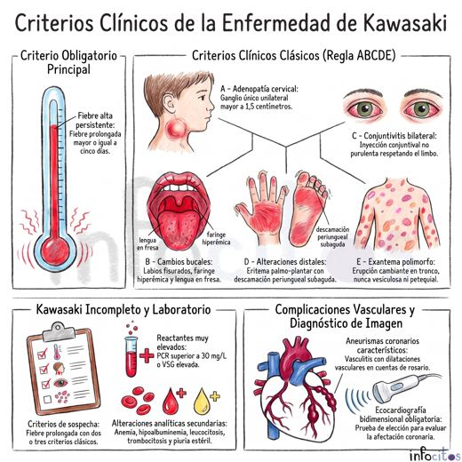
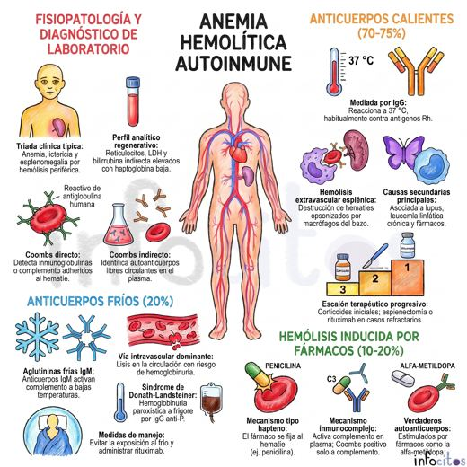
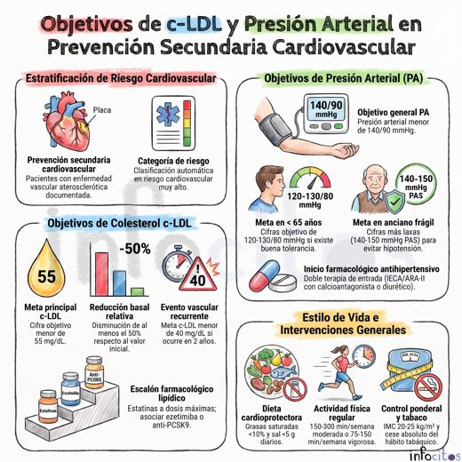
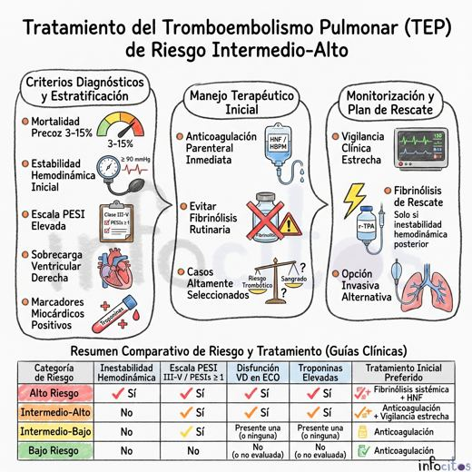
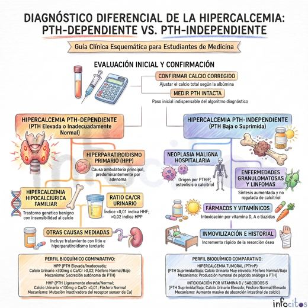
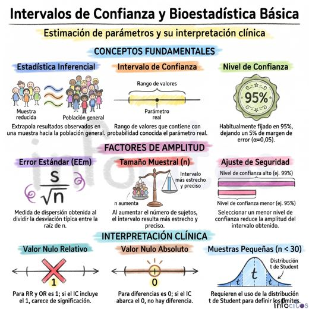
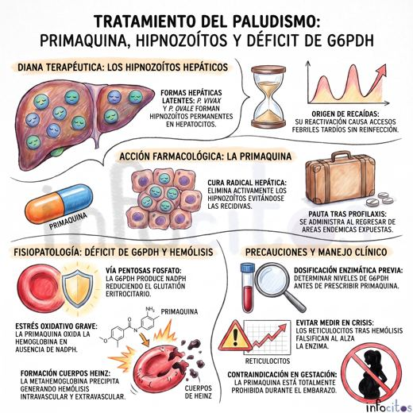
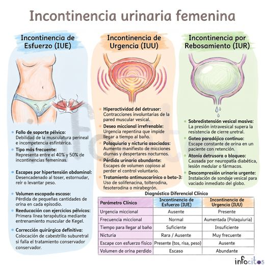
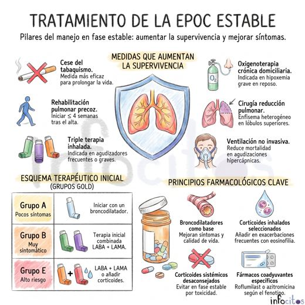
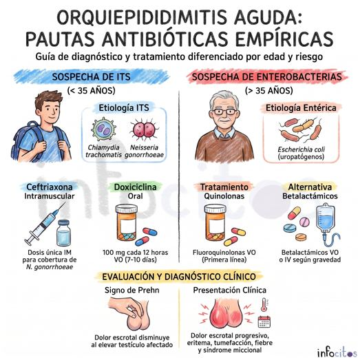
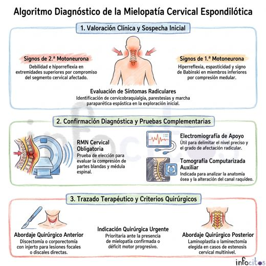
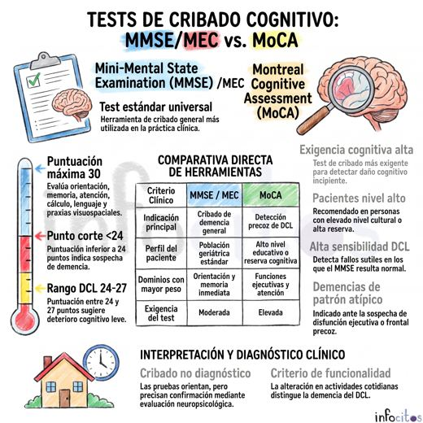
Toca cada tarjeta y compruébalo tú.
Así son por dentro: primero la idea en lenguaje cotidiano, después el término técnico.
Una ruta de aprendizaje, de lo básico a los casos.
- 1Ruta del bloqueLas etapas en orden, qué aprenderás en cada una y en qué tarjetas está.
- 2Etapas cortasCada una abre con sus objetivos y trata un solo tema: primero la base, después los fármacos, al final la práctica.
- 3Conceptos desde ceroLo que otros dan por sabido, explicado en una frase, con una imagen mental, un ejemplo y por qué importa.
- 4Fisiopatología y mecanismos en esquemasCómo funciona el cuerpo, qué falla en la enfermedad y dónde actúa cada fármaco, en esquemas con iconos de órganos.
- 5Ficha de cada fármaco con su caso clínicoMecanismo, indicación y cuidado; el caso trae su imagen o dato clave y la respuesta razonada.
- 6Repaso al cerrar cada etapaUna pregunta corta para comprobar que lo entendiste antes de seguir.
- 7Tablas, comparativas y efectos adversos con su porquéLa familia entera de un vistazo y los fármacos que siempre se confunden, lado a lado.
- 8Aplicar lo aprendidoAlgoritmos de tratamiento, interacciones, casos integradores, perlas y mnemotecnias.
Los 11 bloques
- Farmacología básica: farmacocinética, farmacodinamia e interacciones
- Antibióticos betalactámicos
- Aminoglucósidos, macrólidos, quinolonas y otros
- Antihipertensivos
- Anticoagulantes y antiagregantes
- Antidiabéticos e insulinas
- Analgésicos, AINE y opioides
- Antiepilépticos
- Psicofármacos
- Corticoides e inmunosupresores
- Diuréticos, digoxina, antiarrítmicos y estatinas
Las 583 tarjetas por menos de lo que cuesta un almuerzo.
- PDF para estudiar en el móvil, pregunta y respuesta.
- PDF para imprimir a doble cara y recortar.
- Mazo de Anki listo para repetición espaciada.
- Correcciones y mejoras incluidas.
- Escanea el QR desde la app de tu banco.
- Envía el comprobante y tu correo en el formulario.
- Recibes el manual en tu correo.
(pendiente de añadir)
- Paga con tarjeta de débito o crédito.
- Descarga el manual al instante.
El pago se hace en Gumroad, una tienda segura de productos digitales. Aceptan tarjeta y PayPal.
Material de estudio. No sustituye a las guías clínicas ni al criterio médico.
Antes de comprar
¿En qué formato llega?
Tres archivos: un PDF con una tarjeta por página para estudiar en el móvil, un PDF preparado para imprimir a doble cara y un mazo de Anki (.apkg).
No uso Anki, ¿me sirve?
Sí. Los PDF funcionan solos. Anki es una aplicación gratuita que te repite cada tarjeta justo antes de que la olvides; si quieres probarla, el mazo ya viene hecho.
¿Puedo imprimirlas?
Sí. El PDF imprimible va a doble cara con líneas de corte, para que el anverso y el reverso coincidan.
¿Para qué año de la carrera es?
Para quien cursa o repasa Farmacología en medicina. También sirve a estudiantes de enfermería, farmacia y odontología, y para preparar exámenes de grado.
¿Y si encuentro un error?
Escríbenos por Instagram o TikTok. Lo corregimos y recibes la versión actualizada sin coste.